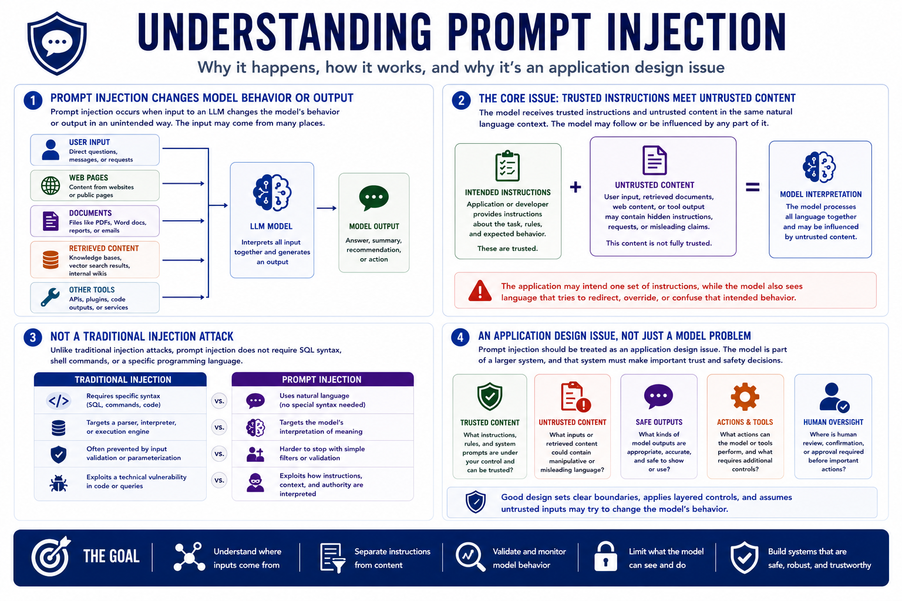

Prompt Injection
What Is Prompt Injection?
Connecting to LMS... Progress: in progress
Version 1.0 | Date: 2026-06-16 | AI security guidance evolves quickly. Verify current recommendations against official project, vendor, and security guidance.

Narration
Prompt injection occurs when input to an LLM changes the model's behavior or output in an unintended way. The input may come directly from a user, from a web page, from a document, from a retrieved knowledge base, or from another tool.
The core issue is that the model receives trusted instructions and untrusted content in the same natural language context. The application may intend one set of instructions, while the model also sees language that tries to redirect, override, or confuse that intended behavior.
Unlike traditional injection attacks, prompt injection does not require SQL syntax, shell commands, or a specific programming language. It exploits the way LLM applications interpret language, context, instructions, and authority.
Prompt injection should be treated as an application design issue. The model is part of a larger system, and that system must decide what content is trusted, what content is untrusted, what outputs are safe to use, and what actions require stronger controls.